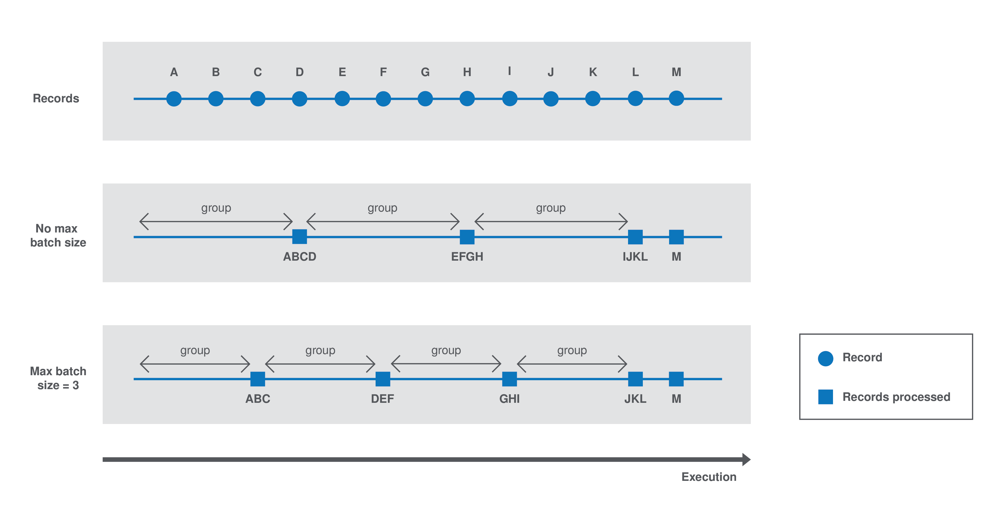

Once you have generated a project, you can start implementing the logic and layout of your components and iterate on it. Depending on the type of component you want to create, the logic implementation can differ. However, the layout and component metadata are defined the same way for all types of components in your project. The main steps are:

In some cases, you will require specific implementations to handle more advanced cases, such as:
You can also make certain configurations reusable across your project by defining services. Using your Java IDE along with a build tool supported by the framework, you can then compile your components to test and deploy them to Talend Studio or other Talend applications:
In any case, follow these best practices to ensure the components you develop are optimized.
You can also learn more about component loading and plugins here:
Registering components
Before implementing a component logic and configuration, you need to specify the family and the category it belongs to, the component type and name, as well as its name and a few other generic parameters. This set of metadata, and more particularly the family, categories and component type, is mandatory to recognize and load the component to Talend Studio or Cloud applications.
Some of these parameters are handled at the project generation using the starter, but can still be accessed and updated later on.
Component family and categories
The family and category of a component is automatically written in the package-info.java of the component package, using the @Components annotation. By default, these parameters are already configured in this file when you import your project in your IDE. Their value correspond to what was defined during the project definition with the starter.
Multiple components can share the same family and category value, but the family + name pair must be unique for the system.
A component can belong to one family only and to one or several categories. If not specified, the category defaults to Misc.
The package-info.java also defines the component family icon, which is different from the component icon. You can learn how to customize this icon in this section.
Here is a sample package-info.java:
@Components(name = "my_component_family", categories = "My Category")
package org.talend.sdk.component.sample;
import org.talend.sdk.component.api.component.Components;Another example with an existing component:
@Components(name = "Salesforce", categories = {"Business", "Cloud"})
package org.talend.sdk.component.sample;
import org.talend.sdk.component.api.component.Components;Component icon and version
Components can require metadata to be integrated in Talend Studio or Cloud platforms.
Metadata is set on the component class and belongs to the org.talend.sdk.component.api.component package.
When you generate your project and import it in your IDE, icon and version both come with a default value.
-
@Icon: Sets an icon key used to represent the component. You can use a custom key with the
custom()method but the icon may not be rendered properly. The icon defaults to Star.
Learn how to set a custom icon for your component in this section. -
@Version: Sets the component version. 1 by default.
Learn how to manage different versions and migrations between your component versions in this section.
@Version(1)
@Icon(FILE_XML_O)
@PartitionMapper(name = "jaxbInput")
public class JaxbPartitionMapper implements Serializable {
// ...
}Defining a custom icon for a component or component family
Every component family and component needs to have a representative icon.
You can use one of the icons provided by the framework or you can use a custom icon.
-
For the component family the icon is defined in the
package-info.javafile. -
For the component itself, you need to declare the icon in the component class.
To use a custom icon, you need to have the icon file placed in the resources/icons folder of the project.
The icon file needs to have a name following the convention IconName_icon32.png, where you can replace IconName by the name of your choice.
@Icon(value = Icon.IconType.CUSTOM, custom = "IconName")Defining an input component logic
Input components are the components generally placed at the beginning of a Talend job. They are in charge of retrieving the data that will later be processed in the job.
An input component is primarily made of three distinct logics: - The execution logic of the component itself, defined through a partition mapper. - The configurable part of the component, defined through the mapper configuration. - The source logic defined through a producer.
Before implementing the component logic and defining its layout and configurable fields, make sure you have specified its basic metadata, as detailed in this document.
Defining a partition mapper
What is a partition mapper
A PartitionMapper is a component able to split itself to make the execution more efficient.
This concept is borrowed from big data and useful in this context only (BEAM executions).
The idea is to divide the work before executing it in order to reduce the overall execution time.
The process is the following:
-
The size of the data you work on is estimated. This part can be heuristic and not very precise.
-
From that size, the execution engine (runner for Beam) requests the mapper to split itself in N mappers with a subset of the overall work.
-
The leaf (final) mapper is used as a
Producer(actual reader) factory.
This kind of component must be Serializable to be distributable.
|
Implementing a partition mapper
A partition mapper requires three methods marked with specific annotations:
-
@Assessorfor the evaluating method -
@Splitfor the dividing method -
@Emitterfor theProducerfactory
@Assessor
The Assessor method returns the estimated size of the data related to the component (depending its configuration).
It must return a Number and must not take any parameter.
For example:
@Assessor
public long estimateDataSetByteSize() {
return ....;
}@Split
The Split method returns a collection of partition mappers and can take optionally a @PartitionSize long value as parameter, which is the requested size of the dataset per sub partition mapper.
For example:
@Split
public List<MyMapper> split(@PartitionSize final long desiredSize) {
return ....;
}Defining the producer method
The Producer method defines the source logic of an input component. It handles the interaction with a physical source and produces input data for the processing flow.
A producer must have a @Producer method without any parameter. It is triggered by the @Emitter of the partition mapper and can return any data. It is defined in the <component_name>Source.java file:
@Producer
public MyData produces() {
return ...;
}Defining a processor or an output component logic
Processors and output components are the components in charge of reading, processing and transforming data in a Talend job, as well as passing it to its required destination.
Before implementing the component logic and defining its layout and configurable fields, make sure you have specified its basic metadata, as detailed in this document.
Defining a processor
What is a processor
A Processor is a component that converts incoming data to a different model.
A processor must have a method decorated with @ElementListener taking an incoming data and returning the processed data:
@ElementListener
public MyNewData map(final MyData data) {
return ...;
}Processors must be Serializable because they are distributed components.
If you just need to access data on a map-based ruleset, you can use JsonObject as parameter type.
From there, Talend Component Kit wraps the data to allow you to access it as a map. The parameter type is not enforced.
This means that if you know you will get a SuperCustomDto, then you can use it as parameter type. But for generic components that are reusable in any chain, it is highly encouraged to use JsonObject until you have an evaluation language-based processor that has its own way to access components.
For example:
@ElementListener
public MyNewData map(final JsonObject incomingData) {
String name = incomingData.getString("name");
int name = incomingData.getInt("age");
return ...;
}
// equivalent to (using POJO subclassing)
public class Person {
private String age;
private int age;
// getters/setters
}
@ElementListener
public MyNewData map(final Person person) {
String name = person.getName();
int age = person.getAge();
return ...;
}A processor also supports @BeforeGroup and @AfterGroup methods, which must not have any parameter and return void values. Any other result would be ignored.
These methods are used by the runtime to mark a chunk of the data in a way which is estimated good for the execution flow size.
Because the size is estimated, the size of a group can vary. It is even possible to have groups of size 1.
|
It is recommended to batch records, for performance reasons:
@BeforeGroup
public void initBatch() {
// ...
}
@AfterGroup
public void endBatch() {
// ...
}You can optimize the data batch processing by using the maxBatchSize parameter. This parameter is automatically implemented on the component when it is deployed to a Talend application. Only the logic needs to be implemented. Learn how to implement chunking/bulking in this document.
Defining multiple outputs
In some cases, you may need to split the output of a processor in two. A common example is to have "main" and "reject" branches where part of the incoming data are passed to a specific bucket to be processed later.
To do that, you can use @Output as replacement of the returned value:
@ElementListener
public void map(final MyData data, @Output final OutputEmitter<MyNewData> output) {
output.emit(createNewData(data));
}Alternatively, you can pass a string that represents the new branch:
@ElementListener
public void map(final MyData data,
@Output final OutputEmitter<MyNewData> main,
@Output("rejected") final OutputEmitter<MyNewDataWithError> rejected) {
if (isRejected(data)) {
rejected.emit(createNewData(data));
} else {
main.emit(createNewData(data));
}
}
// or
@ElementListener
public MyNewData map(final MyData data,
@Output("rejected") final OutputEmitter<MyNewDataWithError> rejected) {
if (isSuspicious(data)) {
rejected.emit(createNewData(data));
return createNewData(data); // in this case the processing continues but notifies another channel
}
return createNewData(data);
}Defining multiple inputs
Having multiple inputs is similar to having multiple outputs, except that an OutputEmitter wrapper is not needed:
@ElementListener
public MyNewData map(@Input final MyData data, @Input("input2") final MyData2 data2) {
return createNewData(data1, data2);
}@Input takes the input name as parameter. If no name is set, it defaults to the "main (default)" input branch. It is recommended to use the default branch when possible and to avoid naming branches according to the component semantic.
Implementing batch processing
Depending on several requirements, including the system capacity and business needs, a processor can process records differently.
For example, for real-time or near-real time processing, it is more interesting to process small batches of data more often. On the other hand, in case of one-time processing, it is more optimal to adapt the way the component handles batches of data according to the system capacity.
By default, the runtime automatically estimates a group size that it considers good, according to the system capacity, to process the data. This group size can sometimes be too big and not optimal for your needs or for your system to handle effectively and correctly.
Users can then customize this size from the component settings in Talend Studio, by specifying a maxBatchSize that adapts the size of each group of data to be processed.
| The estimated group size logic is automatically implemented when a component is deployed to a Talend application. Besides defining the @BeforeGroup and @AfterGroup logic detailed below, no action is required on the implementation side of the component. |
The component batch processes the data as follows:
-
Case 1 - No
maxBatchSizeis specified in the component configuration. The runtime estimates a group size of 4. Records are processed by groups of 4. -
Case 2 - The runtime estimates a group size of 4 but a
maxBatchSizeof 3 is specified in the component configuration. The system adapts the group size to 3. Records are processed by groups of 3.

Each group is processed as follows until there is no record left:
-
The
@BeforeGroupmethod resets a record buffer at the beginning of each group. -
The records of the group are assessed one by one and placed in the buffer as follows: The @ElementListener method tests if the buffer size is greater or equal to the defined
maxBatchSize. If it is, the records are processed. If not, then the current record is buffered. -
The previous step happens for all records of the group. Then the
@AfterGroupmethod tests if the buffer is empty.

You can define the following logic in the processor configuration:
import java.io.Serializable;
import java.util.ArrayList;
import java.util.Collection;
import javax.json.JsonObject;
import org.talend.sdk.component.api.processor.AfterGroup;
import org.talend.sdk.component.api.processor.BeforeGroup;
import org.talend.sdk.component.api.processor.ElementListener;
import org.talend.sdk.component.api.processor.Processor;
@Processor(name = "BulkOutputDemo")
public class BulkProcessor implements Serializable {
private Collection<JsonObject> buffer;
@BeforeGroup
public void begin() {
buffer = new ArrayList<>();
}
@ElementListener
public void bufferize(final JsonObject object) {
buffer.add(object);
}
@AfterGroup
public void commit() {
// save buffer records at once (bulk)
}
}You can learn more about processors in this document.
Defining an output
What is an output
An Output is a Processor that does not return any data.
Conceptually, an output is a data listener. It matches the concept of processor. Being the last component of the execution chain or returning no data makes your processor an output component:
@ElementListener
public void store(final MyData data) {
// ...
}Defining component layout and configuration
The component configuration is defined in the <component_name>Configuration.java file of the package. It consists in defining the configurable part of the component that will be displayed in the UI.
To do that, you can specify parameters. When you import the project in your IDE, the parameters that you have specified in the starter are already present.
Parameter name
Components are configured using their constructor parameters. All parameters can be marked with the @Option property, which lets you give a name to them.
For the name to be correct, you must follow these guidelines:
-
Use a valid Java name.
-
Do not include any
.character in it. -
Do not start the name with a
$. -
Defining a name is optional. If you don’t set a specific name, it defaults to the bytecode name. This can require you to compile with a
-parameterflag to avoid ending up with names such asarg0,arg1, and so on.
| Option name | Valid |
|---|---|
myName |
|
my_name |
|
my.name |
|
$myName |
Parameter types
Parameter types can be primitives or complex objects with fields decorated with @Option exactly like method parameters.
| It is recommended to use simple models which can be serialized in order to ease serialized component implementations. |
For example:
class FileFormat implements Serializable {
@Option("type")
private FileType type = FileType.CSV;
@Option("max-records")
private int maxRecords = 1024;
}
@PartitionMapper(name = "file-reader")
public MyFileReader(@Option("file-path") final File file,
@Option("file-format") final FileFormat format) {
// ...
}Using this kind of API makes the configuration extensible and component-oriented, which allows you to define all you need.
The instantiation of the parameters is done from the properties passed to the component.
Mapping complex objects
The conversion from property to object uses the Dot notation.
For example, assuming the method parameter was configured with @Option("file"):
file.path = /home/user/input.csv
file.format = CSVmatches
public class FileOptions {
@Option("path")
private File path;
@Option("format")
private Format format;
}List case
Lists rely on an indexed syntax to define their elements.
For example, assuming that the list parameter is named files and that the elements are of the  FileOptions type, you can define a list of two elements as follows:
files[0].path = /home/user/input1.csv
files[0].format = CSV
files[1].path = /home/user/input2.xml
files[1].format = EXCELMap case
Similarly to the list case, the map uses .key[index] and .value[index] to represent its keys and values:
// Map<String, FileOptions>
files.key[0] = first-file
files.value[0].path = /home/user/input1.csv
files.value[0].type = CSV
files.key[1] = second-file
files.value[1].path = /home/user/input2.xml
files.value[1].type = EXCEL// Map<FileOptions, String>
files.key[0].path = /home/user/input1.csv
files.key[0].type = CSV
files.value[0] = first-file
files.key[1].path = /home/user/input2.xml
files.key[1].type = EXCEL
files.value[1] = second-file| Avoid using the Map type. Instead, prefer configuring your component with an object if this is possible. |
Defining Constraints and validations on the configuration
You can use metadata to specify that a field is required or has a minimum size, and so on. This is done using the validation metadata in the org.talend.sdk.component.api.configuration.constraint package:
MaxLength
Ensure the decorated option size is validated with a higher bound.
-
API:
@org.talend.sdk.component.api.configuration.constraint.Max -
Name:
maxLength -
Parameter Type:
double -
Supported Types: —
java.lang.CharSequence -
Sample:
{
"validation::maxLength":"12.34"
}MinLength
Ensure the decorated option size is validated with a lower bound.
-
API:
@org.talend.sdk.component.api.configuration.constraint.Min -
Name:
minLength -
Parameter Type:
double -
Supported Types: —
java.lang.CharSequence -
Sample:
{
"validation::minLength":"12.34"
}Pattern
Validate the decorated string with a javascript pattern (even into the Studio).
-
API:
@org.talend.sdk.component.api.configuration.constraint.Pattern -
Name:
pattern -
Parameter Type:
java.lang.string -
Supported Types: —
java.lang.CharSequence -
Sample:
{
"validation::pattern":"test"
}Max
Ensure the decorated option size is validated with a higher bound.
-
API:
@org.talend.sdk.component.api.configuration.constraint.Max -
Name:
max -
Parameter Type:
double -
Supported Types: —
java.lang.Number—int—short—byte—long—double—float -
Sample:
{
"validation::max":"12.34"
}Min
Ensure the decorated option size is validated with a lower bound.
-
API:
@org.talend.sdk.component.api.configuration.constraint.Min -
Name:
min -
Parameter Type:
double -
Supported Types: —
java.lang.Number—int—short—byte—long—double—float -
Sample:
{
"validation::min":"12.34"
}Required
Mark the field as being mandatory.
-
API:
@org.talend.sdk.component.api.configuration.constraint.Required -
Name:
required -
Parameter Type:
- -
Supported Types: —
java.lang.Object -
Sample:
{
"validation::required":"true"
}MaxItems
Ensure the decorated option size is validated with a higher bound.
-
API:
@org.talend.sdk.component.api.configuration.constraint.Max -
Name:
maxItems -
Parameter Type:
double -
Supported Types: —
java.util.Collection -
Sample:
{
"validation::maxItems":"12.34"
}MinItems
Ensure the decorated option size is validated with a lower bound.
-
API:
@org.talend.sdk.component.api.configuration.constraint.Min -
Name:
minItems -
Parameter Type:
double -
Supported Types: —
java.util.Collection -
Sample:
{
"validation::minItems":"12.34"
}UniqueItems
Ensure the elements of the collection must be distinct (kind of set).
-
API:
@org.talend.sdk.component.api.configuration.constraint.Uniques -
Name:
uniqueItems -
Parameter Type:
- -
Supported Types: —
java.util.Collection -
Sample:
{
"validation::uniqueItems":"true"
}
When using the programmatic API, metadata is prefixed by tcomp::. This prefix is stripped in the web for convenience, and the table above uses the web keys.
|
Also note that these validations are executed before the runtime is started (when loading the component instance) and that the execution will fail if they don’t pass.
If it breaks your application, you can disable that validation on the JVM by setting the system property talend.component.configuration.validation.skip to true.
Marking a configuration as dataset or datastore
It is common to classify the incoming data. It is similar to tagging data with several types. Data can commonly be categorized as follows:
-
Datastore: The data you need to connect to the backend.
-
Dataset: A datastore coupled with the data you need to execute an action.
Dataset
Mark a model (complex object) as being a dataset.
-
API: @org.talend.sdk.component.api.configuration.type.DataSet
-
Sample:
{
"tcomp::configurationtype::name":"test",
"tcomp::configurationtype::type":"dataset"
}Datastore
Mark a model (complex object) as being a datastore (connection to a backend).
-
API: @org.talend.sdk.component.api.configuration.type.DataStore
-
Sample:
{
"tcomp::configurationtype::name":"test",
"tcomp::configurationtype::type":"datastore"
}| The component family associated with a configuration type (datastore/dataset) is always the one related to the component using that configuration. |
Those configuration types can be composed to provide one configuration item. For example, a dataset type often needs a datastore type to be provided. A datastore type (that provides the connection information) is used to create a dataset type.
Those configuration types are also used at design time to create shared configurations that can be stored and used at runtime.
For example, in the case of a relational database that supports JDBC:
-
A datastore can be made of:
-
a JDBC URL
-
a username
-
a password.
-
-
A dataset can be made of:
-
a datastore (that provides the data required to connect to the database)
-
a table name
-
data.
-
The component server scans all configuration types and returns a configuration type index. This index can be used for the integration into the targeted platforms (Studio, web applications, and so on).
The configuration type index is represented as a flat tree that contains all the configuration types, which themselves are represented as nodes and indexed by ID.
Every node can point to other nodes. This relation is represented as an array of edges that provides the child IDs.
As an illustration, a configuration type index for the example above can be defined as follows:
{nodes: {
"idForDstore": { datastore:"datastore data", edges:[id:"idForDset"] },
"idForDset": { dataset:"dataset data" }
}
}|
The model allows you to define meta information without restrictions. However, it is highly recommended to ensure that:
|
Defining links between properties
If you need to define a binding between properties, you can use a set of annotations:
ActiveIf
If the evaluation of the element at the location matches value then the element is considered active, otherwise it is deactivated.
-
API:
@org.talend.sdk.component.api.configuration.condition.ActiveIf -
Type:
if -
Sample:
{
"condition::if::evaluationStrategy":"DEFAULT",
"condition::if::negate":"false",
"condition::if::target":"test",
"condition::if::value":"value1,value2"
}ActiveIfs
Allows to set multiple visibility conditions on the same property.
-
API:
@org.talend.sdk.component.api.configuration.condition.ActiveIfs -
Type:
ifs -
Sample:
{
"condition::if::evaluationStrategy::0":"DEFAULT",
"condition::if::evaluationStrategy::1":"LENGTH",
"condition::if::negate::0":"false",
"condition::if::negate::1":"true",
"condition::if::target::0":"sibling1",
"condition::if::target::1":"../../other",
"condition::if::value::0":"value1,value2",
"condition::if::value::1":"SELECTED",
"condition::ifs::operator":"AND"
}The target element location is specified as a relative path to the current location, using Unix path characters.
The configuration class delimiter is /.
The parent configuration class is specified by ...
Thus, ../targetProperty denotes a property, which is located in the parent configuration class and is named targetProperty.
When using the programmatic API, metadata is prefixed with tcomp::. This prefix is stripped in the web for convenience, and the previous table uses the web keys.
|
Adding hints about the rendering
In some cases, you may need to add metadata about the configuration to let the UI render that configuration properly.
For example, a password value that must be hidden and not a simple clear input box. For these cases - if you want to change the UI rendering - you can use a particular set of annotations:
@DefaultValue
Provide a default value the UI can use - only for primitive fields.
-
API:
@org.talend.sdk.component.api.configuration.ui.DefaultValue
Sample:
{
"ui::defaultvalue::value":"test"
}@OptionsOrder
Allows to sort a class properties.
-
API:
@org.talend.sdk.component.api.configuration.ui.OptionsOrder
Sample:
{
"ui::optionsorder::value":"value1,value2"
}@AutoLayout
Request the rendered to do what it thinks is best.
-
API:
@org.talend.sdk.component.api.configuration.ui.layout.AutoLayout
Sample:
{
"ui::autolayout":"true"
}@GridLayout
Advanced layout to place properties by row, this is exclusive with @OptionsOrder.
-
API:
@org.talend.sdk.component.api.configuration.ui.layout.GridLayout
Sample:
{
"ui::gridlayout::value1::value":"first|second,third",
"ui::gridlayout::value2::value":"first|second,third"
}@GridLayouts
Allow to configure multiple grid layouts on the same class, qualified with a classifier (name)
-
API:
@org.talend.sdk.component.api.configuration.ui.layout.GridLayouts
Sample:
{
"ui::gridlayout::Advanced::value":"another",
"ui::gridlayout::Main::value":"first|second,third"
}@HorizontalLayout
Put on a configuration class it notifies the UI an horizontal layout is preferred.
-
API:
@org.talend.sdk.component.api.configuration.ui.layout.HorizontalLayout
Sample:
{
"ui::horizontallayout":"true"
}@VerticalLayout
Put on a configuration class it notifies the UI a vertical layout is preferred.
-
API:
@org.talend.sdk.component.api.configuration.ui.layout.VerticalLayout
Sample:
{
"ui::verticallayout":"true"
}@Code
Mark a field as being represented by some code widget (vs textarea for instance).
-
API:
@org.talend.sdk.component.api.configuration.ui.widget.Code
Sample:
{
"ui::code::value":"test"
}@Credential
Mark a field as being a credential. It is typically used to hide the value in the UI.
-
API:
@org.talend.sdk.component.api.configuration.ui.widget.Credential
Sample:
{
"ui::credential":"true"
}@Structure
Mark a List<String> or Map<String, String> field as being represented as the component data selector (field names generally or field names as key and type as value).
-
API:
@org.talend.sdk.component.api.configuration.ui.widget.Structure
Sample:
{
"ui::structure::discoverSchema":"test",
"ui::structure::type":"IN",
"ui::structure::value":"test"
}@TextArea
Mark a field as being represented by a textarea(multiline text input).
-
API:
@org.talend.sdk.component.api.configuration.ui.widget.TextArea
Sample:
{
"ui::textarea":"true"
}
When using the programmatic API, metadata is prefixed with tcomp::. This prefix is stripped in the web for convenience, and the previous table uses the web keys.
|
You can also check this example about masking credentials.
Target support should cover org.talend.core.model.process.EParameterFieldType but you need to ensure that the web renderer is able to handle the same widgets.
Internationalizing components
In common cases, you can store messages using a properties file in your component module to use internationalization.
This properties file must be stored in the same package as the related components and named Messages. For example, org.talend.demo.MyComponent uses org.talend.demo.Messages[locale].properties.
This file already exists when you import a project generated from the starter.
Default components keys
Out of the box components are internationalized using the same location logic for the resource bundle. The supported keys are:
| Name Pattern | Description |
|---|---|
${family}._displayName |
Display name of the family |
${family}.${category}._category |
Display name of the category |
${family}.${configurationType}.${name}._displayName |
Display name of a configuration type (dataStore or dataSet). Important: this key is read from the family package (not the class package), to unify the localization of the metadata. |
${family}.actions.${actionType}.${actionName}._displayName |
Display name of an action of the family. Specifying it is optional and will default on the action name if not set. |
${family}.${component_name}._displayName |
Display name of the component (used by the GUIs) |
${property_path}._displayName |
Display name of the option. |
${simple_class_name}.${property_name}._displayName |
Display name of the option using its class name. |
${enum_simple_class_name}.${enum_name}._displayName |
Display name of the |
${property_path}._placeholder |
Placeholder of the option. |
Example of configuration for a component named list and belonging to the memory family (@Emitter(family = "memory", name = "list")):
memory.list._displayName = Memory ListInternationalizing a configuration class
Configuration classes can be translated using the simple class name in the messages properties file. This is useful in case of common configurations shared by multiple components.
For example, if you have a configuration class as follows :
public class MyConfig {
@Option
private String host;
@Option
private int port;
}You can give it a translatable display name by adding ${simple_class_name}.${property_name}._displayName to Messages.properties under the same package as the configuration class.
MyConfig.host._displayName = Server Host Name
MyConfig.host._placeholder = Enter Server Host Name...
MyConfig.port._displayName = Server Port
MyConfig.port._placeholder = Enter Server Port...| If you have a display name using the property path, it overrides the display name defined using the simple class name. This rule also applies to placeholders. |
Managing component versions and migration
If some changes impact the configuration, they can be managed through a migration handler at the component level (enabling trans-model migration support).
The @Version annotation supports a migrationHandler method which migrates the incoming configuration to the current model.
For example, if the filepath configuration entry from v1 changed to location in v2, you can remap the value in your MigrationHandler implementation.
A best practice is to split migrations into services that you can inject in the migration handler (through constructor) rather than managing all migrations directly in the handler. For example:
// full component code structure skipped for brievity, kept only migration part
@Version(value = 3, migrationHandler = MyComponent.Migrations.class)
public class MyComponent {
// the component code...
private interface VersionConfigurationHandler {
Map<String, String> migrate(Map<String, String> incomingData);
}
public static class Migrations {
private final List<VersionConfigurationHandler> handlers;
// VersionConfigurationHandler implementations are decorated with @Service
public Migrations(final List<VersionConfigurationHandler> migrations) {
this.handlers = migrations;
this.handlers.sort(/*some custom logic*/);
}
@Override
public Map<String, String> migrate(int incomingVersion, Map<String, String> incomingData) {
Map<String, String> out = incomingData;
for (MigrationHandler handler : handlers) {
out = handler.migrate(out);
}
}
}
}What is important to notice in this snippet is the fact that you can organize your migrations the way that best fits your component.
If you need to apply migrations in a specific order, make sure that they are sorted.
|
Consider this API as a migration callback rather than a migration API. Adjust the migration code structure you need behind the MigrationHandler, based on your component requirements, using service injection.
|
Implementing batch processing
Depending on several requirements, including the system capacity and business needs, a processor can process records differently.
For example, for real-time or near-real time processing, it is more interesting to process small batches of data more often. On the other hand, in case of one-time processing, it is more optimal to adapt the way the component handles batches of data according to the system capacity.
By default, the runtime automatically estimates a group size that it considers good, according to the system capacity, to process the data. This group size can sometimes be too big and not optimal for your needs or for your system to handle effectively and correctly.
Users can then customize this size from the component settings in Talend Studio, by specifying a maxBatchSize that adapts the size of each group of data to be processed.
| The estimated group size logic is automatically implemented when a component is deployed to a Talend application. Besides defining the @BeforeGroup and @AfterGroup logic detailed below, no action is required on the implementation side of the component. |
The component batch processes the data as follows:
-
Case 1 - No
maxBatchSizeis specified in the component configuration. The runtime estimates a group size of 4. Records are processed by groups of 4. -
Case 2 - The runtime estimates a group size of 4 but a
maxBatchSizeof 3 is specified in the component configuration. The system adapts the group size to 3. Records are processed by groups of 3.
Each group is processed as follows until there is no record left:
-
The
@BeforeGroupmethod resets a record buffer at the beginning of each group. -
The records of the group are assessed one by one and placed in the buffer as follows: The @ElementListener method tests if the buffer size is greater or equal to the defined
maxBatchSize. If it is, the records are processed. If not, then the current record is buffered. -
The previous step happens for all records of the group. Then the
@AfterGroupmethod tests if the buffer is empty.
You can define the following logic in the processor configuration:
import java.io.Serializable;
import java.util.ArrayList;
import java.util.Collection;
import javax.json.JsonObject;
import org.talend.sdk.component.api.processor.AfterGroup;
import org.talend.sdk.component.api.processor.BeforeGroup;
import org.talend.sdk.component.api.processor.ElementListener;
import org.talend.sdk.component.api.processor.Processor;
@Processor(name = "BulkOutputDemo")
public class BulkProcessor implements Serializable {
private Collection<JsonObject> buffer;
@BeforeGroup
public void begin() {
buffer = new ArrayList<>();
}
@ElementListener
public void bufferize(final JsonObject object) {
buffer.add(object);
}
@AfterGroup
public void commit() {
// save buffer records at once (bulk)
}
}You can learn more about processors in this document.
Building components with Maven
To develop new components, Talend Component Kit requires a build tool in which you will import the component project generated from the starter.
You will then be able to install and deploy it to Talend applications. A Talend Component Kit plugin is available for each of the supported build tools.
talend-component-maven-plugin helps you write components that match best practices and generate transparently metadata used by Talend Studio.
You can use it as follows:
<plugin>
<groupId>org.talend.sdk.component</groupId>
<artifactId>talend-component-maven-plugin</artifactId>
<version>${component.version}</version>
</plugin>This plugin is also an extension so you can declare it in your build/extensions block as:
<extension>
<groupId>org.talend.sdk.component</groupId>
<artifactId>talend-component-maven-plugin</artifactId>
<version>${component.version}</version>
</extension>Used as an extension, the goals detailed below will be set up.
You can run the following command from the root of the project, by adapting it with each goal name, parameters and values:
$ mvn talend-component:<name_of_the_goal>[:<execution id>] -D<param_user_property>=<param_value>Dependencies
The first goal is a shortcut for the maven-dependency-plugin. It creates the TALEND-INF/dependencies.txt file with the compile and runtime dependencies, allowing the component to use it at runtime:
<plugin>
<groupId>org.talend.sdk.component</groupId>
<artifactId>talend-component-maven-plugin</artifactId>
<version>${component.version}</version>
<executions>
<execution>
<id>talend-dependencies</id>
<goals>
<goal>dependencies</goal>
</goals>
</execution>
</executions>
</plugin>Validating the component programming model
This goal helps you validate the common programming model of the component. To activate it, you can use following execution definition:
<plugin>
<groupId>org.talend.sdk.component</groupId>
<artifactId>talend-component-maven-plugin</artifactId>
<version>${component.version}</version>
<executions>
<execution>
<id>talend-component-validate</id>
<goals>
<goal>validate</goal>
</goals>
</execution>
</executions>
</plugin>It is bound to the process-classes phase by default. When executed, it performs several validations that can be disabled by setting the corresponding flags to false in the <configuration> block of the execution:
| Name | Description | User property | Default |
|---|---|---|---|
validateInternationalization |
Validates that resource bundles are presents and contain commonly used keys (for example, |
|
true |
validateModel |
Ensures that components pass validations of the |
|
true |
validateSerializable |
Ensures that components are |
|
true |
validateMetadata |
Ensures that components have an |
|
true |
validateDataStore |
Ensures that any |
|
true |
validateDataSet |
Ensures that any |
|
true |
validateComponent |
Ensures that the native programming model is respected. You can disable it when using another programming model like Beam. |
|
true |
validateActions |
Validates action signatures for actions not tolerating dynamic binding ( |
|
true |
validateFamily |
Validates the family by verifying that the package containing the |
|
true |
validateDocumentation |
Ensures that all components and |
|
true |
validateLayout |
Ensures that the layout is referencing existing options and properties. |
|
true |
validateOptionNames |
Ensures that the option names are compliant with the framework. It is highly recommended and safer to keep it set to |
|
true |
Generating the component documentation
The asciidoc goal generates an Asciidoc file documenting your component from the configuration model (@Option) and the @Documentation property that you can add to options and to the component itself.
<plugin>
<groupId>org.talend.sdk.component</groupId>
<artifactId>talend-component-maven-plugin</artifactId>
<version>${component.version}</version>
<executions>
<execution>
<id>talend-component-documentation</id>
<goals>
<goal>asciidoc</goal>
</goals>
</execution>
</executions>
</plugin>| Name | Description | User property | Default |
|---|---|---|---|
level |
Level of the root title. |
|
2 ( |
output |
Output folder path. It is recommended to keep it to the default value. |
|
|
formats |
Map of the renderings to do. Keys are the format ( |
|
- |
attributes |
Asciidoctor attributes to use for the rendering when formats is set. |
|
- |
templateEngine |
Template engine configuration for the rendering. |
|
- |
templateDir |
Template directory for the rendering. |
|
- |
title |
Document title. |
|
${project.name} |
version |
The component version. It defaults to the pom version |
|
${project.version} |
workDir |
The template directory for the Asciidoctor rendering - if 'formats' is set. |
|
${project.build.directory}/talend-component/workdir |
attachDocumentations |
Allows to attach (and deploy) the documentations ( |
|
true |
htmlAndPdf |
If you use the plugin as an extension, you can add this property and set it to |
|
false |
Rendering your documentation
To render the generated documentation in HTML or PDF, you can use the Asciidoctor Maven plugin (or Gradle equivalent). You can configure both executions if you want both HTML and PDF renderings.
Make sure to execute the rendering after the documentation generation.
HTML rendering
If you prefer a HTML rendering, you can configure the following execution in the asciidoctor plugin. The example below:
-
Generates the components documentation in
target/classes/TALEND-INF/documentation.adoc. -
Renders the documentation as an HTML file stored in
target/documentation/documentation.html.
<plugin> (1)
<groupId>org.talend.sdk.component</groupId>
<artifactId>talend-component-maven-plugin</artifactId>
<version>${talend-component-kit.version}</version>
<executions>
<execution>
<id>documentation</id>
<phase>prepare-package</phase>
<goals>
<goal>asciidoc</goal>
</goals>
</execution>
</executions>
</plugin>
<plugin> (2)
<groupId>org.asciidoctor</groupId>
<artifactId>asciidoctor-maven-plugin</artifactId>
<version>1.5.6</version>
<executions>
<execution>
<id>doc-html</id>
<phase>prepare-package</phase>
<goals>
<goal>process-asciidoc</goal>
</goals>
<configuration>
<sourceDirectory>${project.build.outputDirectory}/TALEND-INF</sourceDirectory>
<sourceDocumentName>documentation.adoc</sourceDocumentName>
<outputDirectory>${project.build.directory}/documentation</outputDirectory>
<backend>html5</backend>
</configuration>
</execution>
</executions>
</plugin>PDF rendering
If you prefer a PDF rendering, you can configure the following execution in the asciidoctor plugin:
<plugin>
<groupId>org.asciidoctor</groupId>
<artifactId>asciidoctor-maven-plugin</artifactId>
<version>1.5.6</version>
<executions>
<execution>
<id>doc-html</id>
<phase>prepare-package</phase>
<goals>
<goal>process-asciidoc</goal>
</goals>
<configuration>
<sourceDirectory>${project.build.outputDirectory}/TALEND-INF</sourceDirectory>
<sourceDocumentName>documentation.adoc</sourceDocumentName>
<outputDirectory>${project.build.directory}/documentation</outputDirectory>
<backend>pdf</backend>
</configuration>
</execution>
</executions>
<dependencies>
<dependency>
<groupId>org.asciidoctor</groupId>
<artifactId>asciidoctorj-pdf</artifactId>
<version>1.5.0-alpha.16</version>
</dependency>
</dependencies>
</plugin>Including the documentation into a document
If you want to add some more content or a title, you can include the generated document into
another document using Asciidoc include directive.
For example:
= Super Components
Super Writer
:toc:
:toclevels: 3
:source-highlighter: prettify
:numbered:
:icons: font
:hide-uri-scheme:
:imagesdir: images
include::{generated_doc}/documentation.adoc[]To be able to do that, you need to pass the generated_doc attribute to the plugin. For example:
<plugin>
<groupId>org.asciidoctor</groupId>
<artifactId>asciidoctor-maven-plugin</artifactId>
<version>1.5.6</version>
<executions>
<execution>
<id>doc-html</id>
<phase>prepare-package</phase>
<goals>
<goal>process-asciidoc</goal>
</goals>
<configuration>
<sourceDirectory>${project.basedir}/src/main/asciidoc</sourceDirectory>
<sourceDocumentName>my-main-doc.adoc</sourceDocumentName>
<outputDirectory>${project.build.directory}/documentation</outputDirectory>
<backend>html5</backend>
<attributes>
<generated_adoc>${project.build.outputDirectory}/TALEND-INF</generated_adoc>
</attributes>
</configuration>
</execution>
</executions>
</plugin>This is optional but allows to reuse Maven placeholders to pass paths, which can be convenient in an automated build.
You can find more customization options on Asciidoctor website.
Testing a component web rendering
Testing the rendering of your component configuration into the Studio requires deploying the component in Talend Studio. Refer to the Studio documentation.
In the case where you need to deploy your component into a Cloud (web) environment, you can test its web rendering by using the web goal of the plugin:
-
Run the
mvn talend-component:webcommand. -
Open the following URL in a web browser:
localhost:8080. -
Select the component form you want to see from the treeview on the left. The selected form is displayed on the right.
Two parameters are available with the plugin:
-
serverPort, which allows to change the default port (8080) of the embedded server. Its associated user property istalend.web.port. -
serverArguments, that you can use to pass Meecrowave options to the server. Learn more about that configuration at openwebbeans.apache.org/meecrowave/meecrowave-core/cli.html.
| Make sure to install the artifact before using this command because it reads the component JAR from the local Maven repository. |
Generating inputs or outputs
The Mojo generate (Maven plugin goal) of the same plugin also embeds a generator that you can use to bootstrap any input or output component:
<plugin>
<groupId>org.talend.sdk.component</groupId>
<artifactId>talend-component-maven-plugin</artifactId>
<version>${talend-component.version}</version>
<executions>
<execution> (1)
<id>generate-input</id>
<phase>generate-sources</phase>
<goals>
<goal>generate</goal>
</goals>
<configuration>
<type>input</type>
</configuration>
</execution>
<execution> (2)
<id>generate-output</id>
<phase>generate-sources</phase>
<goals>
<goal>generate</goal>
</goals>
<configuration>
<type>output</type>
</configuration>
</execution>
</executions>
</plugin>| 1 | The first execution generates an input (partition mapper and producer). |
| 2 | the second execution generates an output (processor). |
It is intended to be used from the command line (or IDE Maven integration) as follows:
$ mvn talend-component:generate \
-Dtalend.generator.type=[input|output] \ (1)
[-Dtalend.generator.classbase=com.test.MyComponent] \ (2)
[-Dtalend.generator.family=my-family] \ (3)
[-Dtalend.generator.pom.read-only=false] (4)
[-Dtalend.generator.pom.encoding=UTF-16] (5)
[-Dtalend.generator.pom.spacing=4] (6)| 1 | Select the type of component you want: input to generate a mapper and an emitter, or output to generate an output processor. The type is mandatory. |
| 2 | Set the class name base (automatically suffixed by the component type). If not set, the package is guessed and the classname is based on the basedir name. |
| 3 | Set the component family to use. If not specified, it defaults to the basedir name and removes "component[s]" from it. for example, my-component leads to my as family, unless it is explicitly set. |
| 4 | Specify if the generator needs to add component-api to the POM, if not already there. If you already added it, you can set it to false directly in the POM. |
| 5 | Specify the encoding of the component. If not specified, it defaults to UTF-8. |
| 6 | Specify the tabulation spacing. If not specified, it defaults to 2. |
For this command to work, you need to register the plugin as follows:
<plugin>
<groupId>org.talend.sdk.component</groupId>
<artifactId>talend-component-maven-plugin</artifactId>
<version>${talend-component.version}</version>
</plugin>Generating the component archive
Component ARchive (.car) is the way to bundle a component to share it in the Talend ecosystem. It is a plain Java ARchive (.jar) containing a metadata file and a nested Maven repository containing the component and its depenencies.
mvn talend-component:carThis command creates a .car file in your build directory. This file can be shared on Talend platforms.
This command has some optional parameters:
| Name | Description | User property | Default |
|---|---|---|---|
attach |
Specifies whether the component should archive should be attached. |
|
true |
classifier |
The classifier to use if attach is set to true. |
|
component |
metadata |
Additional custom metadata to bundle in the component archive. |
- |
- |
output |
Specifies the output path and name of the archive |
|
${project.build.directory}/${project.build.finalName}.car |
packaging |
Specifies the packaging |
- |
${project.packaging} |
This CAR is executable and exposes the studio-deploy command which takes
a Talend Studio home path as parameter. When executed, it installs the dependencies into the Studio and registers the component in your instance. For example:
# for a studio
java -jar mycomponent.car studio-deploy /path/to/my/studio
or
java -jar mycomponent.car studio-deploy --location /path/to/my/studio
# for a m2 provisioning
java -jar mycomponent.car maven-deploy /path/to/.m2/repository
or
java -jar mycomponent.car maven-deploy --location /path/to/.m2/repositoryYou can also upload the dependencies to your Nexus server using the following command:
java -jar mycomponent.car deploy-to-nexus --url <nexus url> --repo <repository name> --user <username> --pass <password> --threads <parallel threads number> --dir <temp directory>In this command, Nexus URL and repository name are mandatory arguments. All other arguments are optional. If arguments contain spaces or special symbols, you need to quote the whole value of the argument. For example:
--pass "Y0u will \ not G4iess i' ^"Deploying to the Studio
The deploy-in-studio goal deploys the current component module into a local Talend Studio instance.
| Name | Description | User property | Default |
|---|---|---|---|
studioHome |
Path to the Studio home directory |
|
- |
You can use the following command from the root folder of your project:
$ mvn talend-component:deploy-in-studio -Dtalend.component.studioHome="<studio_path>"Help
The help goal displays help information on talend-component-maven-plugin.
Call mvn talend-component:help -Ddetail=true -Dgoal=<goal-name> to display the parameter details of a specific goal.
| Name | Description | User property | Default |
|---|---|---|---|
detail |
Displays all settable properties for each goal. |
|
false |
goal |
The name of the goal for which to show help. If unspecified, all goals are displayed. |
|
- |
indentSize |
Number of spaces per indentation level. This integer should be positive. |
|
2 |
lineLength |
Maximum length of a display line. This integer should be positive. |
|
80 |
Building components with Gradle
To develop new components, Talend Component Kit requires a build tool in which you will import the component project generated from the starter. With this build tool, you will also be able to implement the logic of your component and to install and deploy it to Talend applications. A Talend Component Kit plugin is available for each of the supported build tools.
gradle-talend-component helps you write components that match the best practices. It is inspired from the Maven plugin and adds the ability to generate automatically the dependencies.txt file used by the SDK to build the component classpath. For more information on the configuration, refer to the Maven properties matching the attributes.
You can use it as follows:
buildscript {
repositories {
mavenLocal()
mavenCentral()
}
dependencies {
classpath "org.talend.sdk.component:gradle-talend-component:${talendComponentVersion}"
}
}
apply plugin: 'org.talend.sdk.component'
apply plugin: 'java'
// optional customization
talendComponentKit {
// dependencies.txt generation, replaces maven-dependency-plugin
dependenciesLocation = "TALEND-INF/dependencies.txt"
boolean skipDependenciesFile = false;
// classpath for validation utilities
sdkVersion = "${talendComponentVersion}"
apiVersion = "${talendComponentApiVersion}"
// documentation
skipDocumentation = false
documentationOutput = new File(....)
documentationLevel = 2 // first level will be == in the generated adoc
documentationTitle = 'My Component Family' // default to project name
documentationFormats = [:] // adoc attributes
documentationFormats = [:] // renderings to do
// validation
skipValidation = false
validateFamily = true
validateSerializable = true
validateInternationalization = true
validateModel = true
validateOptionNames = true
validateMetadata = true
validateComponent = true
validateDataStore = true
validateDataSet = true
validateActions = true
validateLocalConfiguration = true
// web
serverArguments = []
serverPort = 8080
// car
carOutput = new File(....)
carMetadata = [:] // custom meta (string key-value pairs)
}Wrapping a Beam I/O
Limitations
This part is limited to specific kinds of Beam PTransform:
-
PTransform<PBegin, PCollection<?>>for inputs. -
PTransform<PCollection<?>, PDone>for outputs. Outputs must use a single (composite or not)DoFnin theirapplymethod.
Wrapping an input
To illustrate the input wrapping, this procedure uses the following input as a starting point (based on existing Beam inputs):
@AutoValue
public abstract [static] class Read extends PTransform<PBegin, PCollection<String>> {
// config
@Override
public PCollection<String> expand(final PBegin input) {
return input.apply(
org.apache.beam.sdk.io.Read.from(new BoundedElasticsearchSource(this, null)));
}
// ... other transform methods
}To wrap the Read in a framework component, create a transform delegating to that Read with at least a @PartitionMapper annotation and using @Option constructor injections to configure the component. Also make sure to follow the best practices and to specify @Icon and @Version.
@PartitionMapper(family = "myfamily", name = "myname")
public class WrapRead extends PTransform<PBegin, PCollection<String>> {
private PTransform<PBegin, PCollection<String>> delegate;
public WrapRead(@Option("dataset") final WrapReadDataSet dataset) {
delegate = TheIO.read().withConfiguration(this.createConfigurationFrom(dataset));
}
@Override
public PCollection<String> expand(final PBegin input) {
return delegate.expand(input);
}
// ... other methods like the mapping with the native configuration (createConfigurationFrom)
}Wrapping an output
To illustrate the output wrapping, this procedure uses the following output as a starting point (based on existing Beam outputs):
@AutoValue
public abstract [static] class Write extends PTransform<PCollection<String>, PDone> {
// configuration withXXX(...)
@Override
public PDone expand(final PCollection<String> input) {
input.apply(ParDo.of(new WriteFn(this)));
return PDone.in(input.getPipeline());
}
// other methods of the transform
}You can wrap this output exactly the same way you wrap an input, but using @Processor instead of:
@Processor(family = "myfamily", name = "myname")
public class WrapWrite extends PTransform<PCollection<String>, PDone> {
private PTransform<PCollection<String>, PDone> delegate;
public WrapWrite(@Option("dataset") final WrapWriteDataSet dataset) {
delegate = TheIO.write().withConfiguration(this.createConfigurationFrom(dataset));
}
@Override
public PDone expand(final PCollection<String> input) {
return delegate.expand(input);
}
// ... other methods like the mapping with the native configuration (createConfigurationFrom)
}Tip
Note that the org.talend.sdk.component.runtime.beam.transform.DelegatingTransform class fully delegates the "expansion" to another transform. Therefore, you can extend it and implement the configuration mapping:
@Processor(family = "beam", name = "file")
public class BeamFileOutput extends DelegatingTransform<PCollection<String>, PDone> {
public BeamFileOutput(@Option("output") final String output) {
super(TextIO.write()
.withSuffix("test")
.to(FileBasedSink.convertToFileResourceIfPossible(output)));
}
}Advanced
In terms of classloading, when you write an I/O, the Beam SDK Java core stack is assumed as provided in Talend Component Kit runtime. This way, you don’t need to include it in the compile scope, it would be ignored anyway.
Coder
If you need a JSonCoder, you can use the org.talend.sdk.component.runtime.beam.factory.service.PluginCoderFactory service,
which gives you access to the JSON-P and JSON-B coders.
There is also an Avro coder, which uses the FileContainer. It ensures it
is self-contained for IndexedRecord and it does not requireâas the default Apache Beam AvroCoderâto set the schema when creating a pipeline.
It consumes more space and therefore is slightly slower, but it is fine for DoFn, since it does not rely on serialization in most cases.
See org.talend.sdk.component.runtime.beam.transform.avro.IndexedRecordCoder.
JsonObject to IndexedRecord
The mainstream model is JsonObject but it is common to have a legacy system using
IndexedRecord. To mitigate the transition, you can use the following PTransforms:
-
IndexedRecordToJson: to convert anIndexedRecordto aJsonObject. -
JsonToIndexedRecord: to convert aJsonObjectto anIndexedRecord. -
SchemalessJsonToIndexedRecord: to convert aJsonObjectto anIndexedRecordwith AVRO schema inference.
Sample
@Version
@Icon(Icon.IconType.KAFKA)
@Emitter(name = "Input")
@AllArgsConstructor
@Documentation("Kafka Input")
public class KafkaInput extends PTransform<PBegin, PCollection<JsonObject>> { (1)
private final InputConfiguration configuration;
private final JsonBuilderFactory builder;
private final PluginCoderFactory coderFactory;
private KafkaIO.Read<byte[], byte[]> delegate() {
final KafkaIO.Read<byte[], byte[]> read = KafkaIO.<byte[], byte[]> read()
.withBootstrapServers(configuration.getBootstrapServers())
.withTopics(configuration.getTopics().stream().map(InputConfiguration.Topic::getName).collect(toList()))
.withKeyDeserializer(ByteArrayDeserializer.class).withValueDeserializer(ByteArrayDeserializer.class);
if (configuration.getMaxResults() > 0) {
return read.withMaxNumRecords(configuration.getMaxResults());
}
return read;
}
@Override (2)
public PCollection<JsonObject> expand(final PBegin pBegin) {
final PCollection<KafkaRecord<byte[], byte[]>> kafkaEntries = pBegin.getPipeline().apply(delegate());
return kafkaEntries.apply(ParDo.of(new RecordToJson(builder))).setCoder(coderFactory.jsonp()); (3)
}
@AllArgsConstructor
private static class RecordToJson extends DoFn<KafkaRecord<byte[], byte[]>, JsonObject> {
private final JsonBuilderFactory builder;
@ProcessElement
public void onElement(final ProcessContext context) {
context.output(toJson(context.element()));
}
private JsonObject toJson(final KafkaRecord<byte[], byte[]> element) {
return builder.createObjectBuilder().add("key", new String(element.getKV().getKey()))
.add("value", new String(element.getKV().getValue())).build();
}
}
}| 1 | The PTransform generics define that the component is an input (PBegin marker). |
| 2 | The expand method chains the native I/O with a custom mapper (RecordToJson). |
| 3 | The mapper uses the JSON-P coder automatically created from the contextual component. |
Because the Beam wrapper does not respect the standard Talend Component Kit programming model ( for example, there is no @Emitter), you need to set the <talend.validation.component>false</talend.validation.component> property in your pom.xml file (or equivalent for Gradle) to skip the component programming model validations of the framework.
Talend Component Kit best practices
Organizing your code
Some recommendations apply to the way component packages are organized:
-
Make sure to create a
package-info.java filewith the component family/categories at the root of your component package:
@Components(family = "jdbc", categories = "Database")
package org.talend.sdk.component.jdbc;
import org.talend.sdk.component.api.component.Components;-
Create a package for the configuration.
-
Create a package for the actions.
-
Create a package for the component and one sub-package by type of component (input, output, processors, and so on).
Configuring components
Serializing your configuration
It is recommended to serialize your configuration in order to be able to pass it through other components.
Input and output components
When building a new component, the first step is to identify the way it must be configured.
The two main concepts are:
-
The DataStore which is the way you can access the backend.
-
The DataSet which is the way you interact with the backend.
For example:
| Example description | DataStore | DataSet |
|---|---|---|
Accessing a relational database like MySQL |
JDBC driver, URL, username, password |
Query to execute, row mapper, and so on. |
Accessing a file system |
File pattern (or directory + file extension/prefix/…) |
File format, buffer size, and so on. |
It is common to have the dataset including the datastore, because both are required to work. However, it is recommended to replace this pattern by defining both dataset and datastore in a higher level configuration model. For example:
@DataSet
public class MyDataSet {
// ...
}
@DataStore
public class MyDataStore {
// ...
}
public class MyComponentConfiguration {
@Option
private MyDataSet dataset;
@Option
private MyDataStore datastore;
}About actions
Input and output components are particular because they can be linked to a set of actions. It is recommended to wire all the actions you can apply to ensure the consumers of your component can provide a rich experience to their users.
The most common actions are the following ones:
| Type | Action | Description | Configuration example | Action example |
|---|---|---|---|---|
DataStore |
|
Exposes a way to ensure the datastore/connection works |
|
|
Processor components
Configuring processor components is simpler than configuring input and output components because it is specific for each component. For example, a mapper takes the mapping between the input and output models:
public class MappingConfiguration {
@Option
private Map<String, String> fieldsMapping;
@Option
private boolean ignoreCase;
//...
}Handling UI interactions
It is recommended to provide as much information as possible to let the UI work with the data during its edition.
Validations
Light validations
Light validations are all the validations you can execute on the client side. They are listed in the UI hint section.
Use light validations first before going with custom validations because they are more efficient.
Custom validations
Custom validations enforce custom code to be executed, they are more heavy to process, so prefer using light validations when possible.
Define an action with the parameters needed for the validation and link the option you want to validate to this action. For example, to validate a dataset for a JDBC driver:
// ...
public class JdbcDataStore
implements Serializable {
@Option
@Validable("driver")
private String driver;
// ...
}
@AsyncValidation("driver")
public ValidationResult validateDriver(@Option("value") String driver) {
if (findDriver(driver) != null) {
return new ValidationResult(Status.OK, "Driver found");
}
return new ValidationResult(Status.KO, "Driver not found");
}You can also define a Validable class and use it to validate a form by setting it on your whole configuration:
// Note: some parts of the API were removed for clarity
public class MyConfiguration {
// a lot of @Options
}
public MyComponent {
public MyComponent(@Validable("configuration") MyConfiguration config) {
// ...
}
//...
}
@AsyncValidation("configuration")
public ValidationResult validateDriver(@Option("value") MyConfiguration configuration) {
if (isValid(configuration)) {
return new ValidationResult(Status.OK, "Configuration valid");
}
return new ValidationResult(Status.KO, "Driver not valid ${because ...}");
}
The parameter binding of the validation method uses the same logic as the component configuration injection. Therefore, the @Option method specifies the prefix to use to reference a parameter.It is recommended to use @Option("value") until you know exactly why you don’t use it. This way, the consumer can match the configuration model and just prefix it with value. to send the instance to validate.
|
Completion
It can be handy and user-friendly to provide completion on some fields. For example, to define completion for available drivers:
// ...
public class JdbcDataStore
implements Serializable {
@Option
@Completable("driver")
private String driver;
// ...
}
@Completion("driver")
public CompletionList findDrivers() {
return new CompletionList(findDriverList());
}Component representation
Each component must have its own icon:
@Icon(Icon.IconType.DB_INPUT)
@PartitionMapper(family = "jdbc", name = "input")
public class JdbcPartitionMapper
implements Serializable {
}| You can use talend.surge.sh/icons/ to find the icon you want to use. |
Enforcing versioning on components
It is recommended to enforce the version of your component, event though it is not mandatory for the first version.
@Version(1)
@PartitionMapper(family = "jdbc", name = "input")
public class JdbcPartitionMapper
implements Serializable {
}If you break a configuration entry in a later version; make sure to:
-
Upgrade the version.
-
Support a migration of the configuration.
@Version(value = 2, migrationHandler = JdbcPartitionMapper.Migrations.class)
@PartitionMapper(family = "jdbc", name = "input")
public class JdbcPartitionMapper
implements Serializable {
public static class Migrations implements MigrationHandler {
// implement your migration
}
}Component Loading
Talend Component scanning is based on plugins. To make sure that plugins can be developed in parallel and avoid conflicts, they need to be isolated (component or group of components in a single jar/plugin).
Multiple options are available:
-
Graph classloading: this option allows you to link the plugins and dependencies together dynamically in any direction.
For example, the graph classloading can be illustrated by OSGi containers. -
Tree classloading: a shared classloader inherited by plugin classloaders. However, plugin classloader classes are not seen by the shared classloader, nor by other plugins.
For example, the tree classloading is commonly used by Servlet containers where plugins are web applications. -
Flat classpath: listed for completeness but rejected by design because it doesn’t comply with this requirement.
In order to avoid much complexity added by this layer, Talend Component Kit relies on a tree classloading. The advantage is that you don’t need to define the relationship with other plugins/dependencies, because it is built-in.
Here is a representation of this solution:

The shared area contains Talend Component Kit API, which only contains by default the classes shared by the plugins.
Then, each plugin is loaded with its own classloader and dependencies.
Packaging a plugin
| This section explains the overall way to handle dependencies but the Talend Maven plugin provides a shortcut for that. |
A plugin is a JAR file that was enriched with the list of its dependencies. By default, Talend Component Kit runtime is able to read the output of maven-dependency-plugin in TALEND-INF/dependencies.txt. You just need to make sure that your component defines the following plugin:
<plugin>
<groupId>org.apache.maven.plugins</groupId>
<artifactId>maven-dependency-plugin</artifactId>
<version>3.0.2</version>
<executions>
<execution>
<id>create-TALEND-INF/dependencies.txt</id>
<phase>process-resources</phase>
<goals>
<goal>list</goal>
</goals>
<configuration>
<outputFile>${project.build.outputDirectory}/TALEND-INF/dependencies.txt</outputFile>
</configuration>
</execution>
</executions>
</plugin>Once build, check the JAR file and look for the following lines:
$ unzip -p target/mycomponent-1.0.0-SNAPSHOT.jar TALEND-INF/dependencies.txt
The following files have been resolved:
org.talend.sdk.component:component-api:jar:1.0.0-SNAPSHOT:provided
org.apache.geronimo.specs:geronimo-annotation_1.3_spec:jar:1.0:provided
org.superbiz:awesome-project:jar:1.2.3:compile
junit:junit:jar:4.12:test
org.hamcrest:hamcrest-core:jar:1.3:testWhat is important to see is the scope related to the artifacts:
-
The APIs (
component-apiandgeronimo-annotation_1.3_spec) areprovidedbecause you can consider them to be there when executing (they come with the framework). -
Your specific dependencies (
awesome-projectin the example above) are marked ascompile: they are included as needed dependencies by the framework (note that usingruntimeworks too). -
the other dependencies are ignored. For example,
testdependencies.
Packaging an application
Even if a flat classpath deployment is possible, it is not recommended because it would then reduce the capabilities of the components.
Dependencies
The way the framework resolves dependencies is based on a local Maven repository layout. As a quick reminder, it looks like:
.
âââ groupId1
â  âââ artifactId1
â  âââ version1
â  â  âââ artifactId1-version1.jar
â  âââ version2
â    âââ artifactId1-version2.jar
âââ groupId2
  âââ artifactId2
  âââ version1
    âââ artifactId2-version1.jarThis is all the layout the framework uses. The logic converts t-uple {groupId, artifactId, version, type (jar)} to the path in the repository.
Talend Component Kit runtime has two ways to find an artifact:
-
From the file system based on a configured Maven 2 repository.
-
From a fat JAR (uber JAR) with a nested Maven repository under
MAVEN-INF/repository.
The first option uses either ${user.home}/.m2/repository default) or a specific path configured when creating a ComponentManager.
The nested repository option needs some configuration during the packaging to ensure the repository is correctly created.
Creating a nested Maven repository with maven-shade-plugin
To create the nested MAVEN-INF/repository repository, you can use the nested-maven-repository extension:
<plugin>
<groupId>org.apache.maven.plugins</groupId>
<artifactId>maven-shade-plugin</artifactId>
<version>3.0.0</version>
<executions>
<execution>
<phase>package</phase>
<goals>
<goal>shade</goal>
</goals>
<configuration>
<transformers>
<transformer implementation="org.talend.sdk.component.container.maven.shade.ContainerDependenciesTransformer">
<session>${session}</project>
</transformer>
</transformers>
</configuration>
</execution>
</executions>
<dependencies>
<dependency>
<groupId>org.talend.sdk.component</groupId>
<artifactId>nested-maven-repository</artifactId>
<version>${the.plugin.version}</version>
</dependency>
</dependencies>
</plugin>Listing needed plugins
Plugins are usually programmatically registered. If you want to make some of them automatically available, you need to generate a TALEND-INF/plugins.properties file that maps a plugin name to coordinates found with the Maven mechanism described above.
You can enrich maven-shade-plugin to do it:
<plugin>
<groupId>org.apache.maven.plugins</groupId>
<artifactId>maven-shade-plugin</artifactId>
<version>3.0.0</version>
<executions>
<execution>
<phase>package</phase>
<goals>
<goal>shade</goal>
</goals>
<configuration>
<transformers>
<transformer implementation="org.talend.sdk.component.container.maven.shade.PluginTransformer">
<session>${session}</project>
</transformer>
</transformers>
</configuration>
</execution>
</executions>
<dependencies>
<dependency>
<groupId>org.talend.sdk.component</groupId>
<artifactId>nested-maven-repository</artifactId>
<version>${the.plugin.version}</version>
</dependency>
</dependencies>
</plugin>maven-shade-plugin extensions
Here is a final job/application bundle based on maven-shade-plugin:
<plugin>
<groupId>org.apache.maven.plugins</groupId>
<artifactId>maven-shade-plugin</artifactId>
<version>3.0.0</version>
<configuration>
<createDependencyReducedPom>false</createDependencyReducedPom>
<filters>
<filter>
<artifact>*:*</artifact>
<excludes>
<exclude>META-INF/.SF</exclude>
<exclude>META-INF/.DSA</exclude>
<exclude>META-INF/*.RSA</exclude>
</excludes>
</filter>
</filters>
</configuration>
<executions>
<execution>
<phase>package</phase>
<goals>
<goal>shade</goal>
</goals>
<configuration>
<shadedClassifierName>shaded</shadedClassifierName>
<transformers>
<transformer
implementation="org.talend.sdk.component.container.maven.shade.ContainerDependenciesTransformer">
<session>${session}</session>
<userArtifacts>
<artifact>
<groupId>org.talend.sdk.component</groupId>
<artifactId>sample-component</artifactId>
<version>1.0</version>
<type>jar</type>
</artifact>
</userArtifacts>
</transformer>
<transformer implementation="org.talend.sdk.component.container.maven.shade.PluginTransformer">
<session>${session}</session>
<userArtifacts>
<artifact>
<groupId>org.talend.sdk.component</groupId>
<artifactId>sample-component</artifactId>
<version>1.0</version>
<type>jar</type>
</artifact>
</userArtifacts>
</transformer>
</transformers>
</configuration>
</execution>
</executions>
<dependencies>
<dependency>
<groupId>org.talend.sdk.component</groupId>
<artifactId>nested-maven-repository-maven-plugin</artifactId>
<version>${the.version}</version>
</dependency>
</dependencies>
</plugin>| The configuration unrelated to transformers depends on your application. |
ContainerDependenciesTransformer embeds a Maven repository and PluginTransformer to create a file that lists (one per line) artifacts (representing plugins).
Both transformers share most of their configuration:
-
session: must be set to${session}. This is used to retrieve dependencies. -
scope: a comma-separated list of scopes to include in the artifact filtering (note that the default will rely onprovidedbut you can replace it bycompile,runtime,runtime+compile,runtime+systemortest). -
include: a comma-separated list of artifacts to include in the artifact filtering. -
exclude: a comma-separated list of artifacts to exclude in the artifact filtering. -
userArtifacts: a list of artifacts (groupId, artifactId, version, type - optional, file - optional for plugin transformer, scope - optional) which can be forced inline. This parameter is mainly useful forÂPluginTransformer. -
includeTransitiveDependencies: should transitive dependencies of the components be included. Set totrueby default. -
includeProjectComponentDependencies: should project component dependencies be included. Set tofalseby default. It is not needed when a job project uses isolation for components. -
userArtifacts: set of component artifacts to include.
|
With the component tooling, it is recommended to keep default locations. Also if you need to use project dependencies, you can need to refactor your project structure to ensure component isolation. Talend Component Kit lets you handle that part but the recommended practice is to use userArtifacts for the components instead of project <dependencies>.
|
ContainerDependenciesTransformer
ContainerDependenciesTransformer specific configuration is as follows:
-
repositoryBase: base repository location (MAVEN-INF/repositoryby default). -
ignoredPaths: a comma-separated list of folders not to create in the output JAR. This is common for folders already created by other transformers/build parts.
PluginTransformer
ContainerDependenciesTransformer specific configuration is the following one:
-
pluginListResource: base repository location (default to TALEND-INF/plugins.properties`).
For example, if you want to list only the plugins you use, you can configure this transformer as follows:
<transformer implementation="org.talend.sdk.component.container.maven.shade.PluginTransformer">
<session>${session}</session>
<include>org.talend.sdk.component:component-x,org.talend.sdk.component:component-y,org.talend.sdk.component:component-z</include>
</transformer>Component scanning rules and default exclusions
The framework uses two kind of filterings when scanning your component. One based on the JAR name
and one based on the package name. Make sure that your component definitions (including services)
are in a scanned module if they are not registered manually using ComponentManager.instance().addPlugin(), and that the component package is not excluded.
Jars Scanning
To find components the framework can scan the classpath but in this case, to avoid to scan the whole classpath which can be really huge an impacts a lot the startup time, several jars are excluded out of the box.
These jars use the following prefix:
-
ApacheJMeter
-
FastInfoset
-
HdrHistogram
-
HikariCP
-
PDFBox
-
RoaringBitmap-
-
XmlSchema-
-
accessors-smart
-
activation-
-
activeio-
-
activemq-
-
aeron
-
aether-
-
agrona
-
akka-
-
animal-sniffer-annotation
-
annotation
-
ant-
-
antlr-
-
antlr4-
-
aopalliance-
-
apache-el
-
apache-mime4j
-
apacheds-
-
api-asn1-
-
api-common-
-
api-util-
-
apiguardian-api-
-
app-
-
archaius-core
-
args4j-
-
arquillian-
-
asciidoctorj-
-
asm-
-
aspectj
-
async-http-client-
-
auto-value-
-
autoschema-
-
avalon-framework-
-
avro-
-
avro4s-
-
awaitility-
-
aws-
-
axis-
-
axis2-
-
base64-
-
batchee-jbatch
-
batik-
-
bcmail
-
bcpkix
-
bcprov-
-
beam-model-
-
beam-runners-
-
beam-sdks-
-
bigtable-client-
-
bigtable-protos-
-
boilerpipe-
-
bonecp
-
bootstrap.jar
-
brave-
-
bsf-
-
build-link
-
bval
-
byte-buddy
-
c3p0-
-
cache
-
carrier
-
cassandra-driver-core
-
catalina-
-
catalina.jar
-
cats
-
cdi-
-
cglib-
-
charsets.jar
-
chill
-
classindex
-
classmate
-
classutil
-
classycle
-
cldrdata
-
commands-
-
common-
-
commons-
-
component-api
-
component-form
-
component-runtime
-
component-server
-
component-spi
-
component-studio
-
components-adapter-beam
-
components-api
-
components-common
-
compress-lzf
-
config
-
constructr
-
container-core
-
contenttype
-
coverage-agent
-
cryptacular-
-
cssparser-
-
curator-
-
curvesapi-
-
cxf-
-
daikon
-
databinding
-
dataquality
-
dataset-
-
datastore-
-
debugger-agent
-
deltaspike-
-
deploy.jar
-
derby-
-
derbyclient-
-
derbynet-
-
dnsns
-
dom4j
-
draw2d
-
easymock-
-
ecj-
-
eclipselink-
-
ehcache-
-
el-api
-
enumeratum
-
enunciate-core-annotations
-
error_prone_annotations
-
expressions
-
fastutil
-
feign-core
-
feign-hystrix
-
feign-slf4j
-
filters-helpers
-
findbugs-
-
fluent-hc
-
fluentlenium-core
-
fontbox
-
freemarker-
-
fusemq-leveldb-
-
gax-
-
gcsio-
-
gef-
-
geocoder
-
geronimo-
-
gmbal
-
google-
-
gpars-
-
gragent.jar
-
graph
-
grizzled-scala
-
grizzly-
-
groovy-
-
grpc-
-
gson-
-
guava-
-
guice-
-
h2-
-
hadoop-
-
hamcrest-
-
hawtbuf-
-
hawtdispatch-
-
hawtio-
-
hawtjni-runtime
-
help-
-
hibernate-
-
hk2-
-
howl-
-
hsqldb-
-
htmlunit-
-
htrace-
-
httpclient-
-
httpcore-
-
httpmime
-
hystrix
-
iban4j-
-
icu4j-
-
idb-
-
idea_rt.jar
-
instrumentation-api
-
ion-java
-
isoparser-
-
istack-commons-runtime-
-
ivy-
-
j2objc-annotations
-
jBCrypt
-
jaccess
-
jackcess-
-
jackson-
-
janino-
-
jansi-
-
jasper-el.jar
-
jasper.jar
-
jasypt-
-
java-atk-wrapper
-
java-libpst-
-
java-support-
-
java-xmlbuilder-
-
javacsv
-
javaee-
-
javaee-api
-
javassist-
-
javaws.jar
-
javax.
-
jaxb-
-
jaxp-
-
jbake-
-
jboss-
-
jbossall-
-
jbosscx-
-
jbossjts-
-
jbosssx-
-
jcache
-
jce.jar
-
jcip-annotations
-
jcl-over-slf4j-
-
jcommander-
-
jdbcdslog-1
-
jempbox
-
jersey-
-
jets3t
-
jettison-
-
jetty-
-
jface
-
jfairy
-
jffi
-
jfr.jar
-
jfxrt.jar
-
jfxswt
-
jhighlight
-
jjwt
-
jline
-
jmatio-
-
jmdns-
-
jmespath-
-
jms
-
jmustache
-
jna-
-
jnr-
-
jobs-
-
joda-convert
-
joda-time-
-
johnzon-
-
jolokia-
-
jopt-simple
-
jruby-
-
json-
-
json4s-
-
jsonb-api
-
jsoup-
-
jsp-api
-
jsr
-
jsse.jar
-
jta
-
jul-to-slf4j-
-
juli-
-
junit-
-
junit5-
-
juniversalchardet
-
junrar-
-
jwt
-
jython
-
kafka
-
kahadb-
-
kotlin-runtime
-
kryo
-
leveldb
-
libphonenumber
-
lift-json
-
lmdbjava
-
localedata
-
log4j-
-
logback
-
logging-event-layout
-
logkit-
-
lombok
-
lucene
-
lz4
-
machinist
-
macro-compat
-
mail-
-
management-
-
mapstruct-
-
maven-
-
mbean-annotation-api-
-
meecrowave-
-
mesos-
-
metadata-extractor-
-
metrics-
-
microprofile-config-api-
-
mimepull-
-
mina-
-
minlog
-
mockito-core
-
mqtt-client-
-
multitenant-core
-
multiverse-core-
-
mx4j-
-
myfaces-
-
mysql-connector-java-
-
nashorn
-
neethi-
-
neko-htmlunit
-
nekohtml-
-
netflix
-
netty-
-
nimbus-jose-jwt
-
objenesis-
-
okhttp
-
okio
-
opencensus-
-
openjpa-
-
openmdx-
-
opennlp-
-
opensaml-
-
opentest4j-
-
openwebbeans-
-
openws-
-
ops4j-
-
org.apache.aries
-
org.apache.commons
-
org.apache.log4j
-
org.eclipse.
-
org.junit.
-
org.osgi.core-
-
org.osgi.enterprise
-
org.talend
-
orient-commons-
-
orientdb-core-
-
orientdb-nativeos-
-
oro-
-
osgi
-
paranamer
-
parquet
-
pax-url
-
pdfbox
-
play
-
plexus-
-
plugin.jar
-
poi-
-
postgresql
-
preferences-
-
prefixmapper
-
proto-
-
protobuf-
-
py4j-
-
pyrolite-
-
qdox-
-
quartz-2
-
quartz-openejb-
-
reactive-streams
-
reflectasm-
-
reflections
-
regexp-
-
registry-
-
resources.jar
-
rhino
-
ribbon
-
rmock-
-
rome
-
routes-compiler
-
routines
-
rt.jar
-
runners
-
runtime-
-
rxjava
-
rxnetty
-
saaj-
-
sac-
-
scala
-
scalap
-
scalatest
-
scannotation-
-
selenium
-
serializer-
-
serp-
-
service-common
-
servlet-api-
-
servo-
-
shaded
-
shapeless
-
shrinkwrap-
-
sisu-guice
-
sisu-inject
-
slf4j-
-
slick
-
smack-
-
smackx-
-
snakeyaml-
-
snappy-
-
spark-
-
specs2
-
spring-
-
sshd-
-
ssl-config-core
-
stax-api-
-
stax2-api-
-
stream
-
sunec.jar
-
sunjce_provider
-
sunpkcs11
-
surefire-
-
swagger-
-
swizzle-
-
sxc-
-
system-rules
-
tachyon-
-
tagsoup-
-
talend-icon
-
test-agent
-
test-interface
-
testng-
-
threetenbp
-
tika-
-
tomcat
-
tomee-
-
tools.jar
-
twirl
-
twitter4j-
-
tyrex
-
uncommons
-
unused
-
util
-
validation-api-
-
velocity-
-
wagon-
-
wandou
-
webbeans-
-
websocket
-
woodstox-core
-
workbench
-
ws-commons-util-
-
wsdl4j-
-
wss4j-
-
wstx-asl-
-
xalan-
-
xbean-
-
xercesImpl-
-
xlsx-streamer-
-
xml-apis-
-
xml-resolver-
-
xmlbeans-
-
xmlenc-
-
xmlgraphics-
-
xmlpcore
-
xmlpull-
-
xmlrpc-
-
xmlschema-
-
xmlsec-
-
xmltooling-
-
xmlunit-
-
xstream-
-
xz-
-
zipfs.jar
-
zipkin-
-
ziplock-
-
zkclient
-
zookeeper-
Package Scanning
Since the framework can be used in the case of fatjars or shades, and because it still uses scanning, it is important to ensure we don’t scan the whole classes for performances reason.
Therefore, the following packages are ignored:
-
avro.shaded
-
com.codehale.metrics
-
com.ctc.wstx
-
com.datastax.driver.core
-
com.fasterxml.jackson.annotation
-
com.fasterxml.jackson.core
-
com.fasterxml.jackson.databind
-
com.fasterxml.jackson.dataformat
-
com.fasterxml.jackson.module
-
com.google.common
-
com.google.thirdparty
-
com.ibm.wsdl
-
com.jcraft.jsch
-
com.kenai.jffi
-
com.kenai.jnr
-
com.sun.istack
-
com.sun.xml.bind
-
com.sun.xml.messaging.saaj
-
com.sun.xml.txw2
-
com.thoughtworks
-
io.jsonwebtoken
-
io.netty
-
io.swagger.annotations
-
io.swagger.config
-
io.swagger.converter
-
io.swagger.core
-
io.swagger.jackson
-
io.swagger.jaxrs
-
io.swagger.model
-
io.swagger.models
-
io.swagger.util
-
javax
-
jnr
-
junit
-
net.sf.ehcache
-
net.shibboleth.utilities.java.support
-
org.aeonbits.owner
-
org.apache.activemq
-
org.apache.beam
-
org.apache.bval
-
org.apache.camel
-
org.apache.catalina
-
org.apache.commons.beanutils
-
org.apache.commons.cli
-
org.apache.commons.codec
-
org.apache.commons.collections
-
org.apache.commons.compress
-
org.apache.commons.dbcp2
-
org.apache.commons.digester
-
org.apache.commons.io
-
org.apache.commons.jcs.access
-
org.apache.commons.jcs.admin
-
org.apache.commons.jcs.auxiliary
-
org.apache.commons.jcs.engine
-
org.apache.commons.jcs.io
-
org.apache.commons.jcs.utils
-
org.apache.commons.lang
-
org.apache.commons.lang3
-
org.apache.commons.logging
-
org.apache.commons.pool2
-
org.apache.coyote
-
org.apache.cxf
-
org.apache.geronimo.javamail
-
org.apache.geronimo.mail
-
org.apache.geronimo.osgi
-
org.apache.geronimo.specs
-
org.apache.http
-
org.apache.jcp
-
org.apache.johnzon
-
org.apache.juli
-
org.apache.logging.log4j.core
-
org.apache.logging.log4j.jul
-
org.apache.logging.log4j.util
-
org.apache.logging.slf4j
-
org.apache.meecrowave
-
org.apache.myfaces
-
org.apache.naming
-
org.apache.neethi
-
org.apache.openejb
-
org.apache.openjpa
-
org.apache.oro
-
org.apache.tomcat
-
org.apache.tomee
-
org.apache.velocity
-
org.apache.webbeans
-
org.apache.ws
-
org.apache.wss4j
-
org.apache.xbean
-
org.apache.xml
-
org.apache.xml.resolver
-
org.bouncycastle
-
org.codehaus.jackson
-
org.codehaus.stax2
-
org.codehaus.swizzle.Grep
-
org.codehaus.swizzle.Lexer
-
org.cryptacular
-
org.eclipse.jdt.core
-
org.eclipse.jdt.internal
-
org.fusesource.hawtbuf
-
org.h2
-
org.hamcrest
-
org.hsqldb
-
org.jasypt
-
org.jboss.marshalling
-
org.joda.time
-
org.jose4j
-
org.junit
-
org.jvnet.mimepull
-
org.metatype.sxc
-
org.objectweb.asm
-
org.objectweb.howl
-
org.openejb
-
org.opensaml
-
org.slf4j
-
org.swizzle
-
org.terracotta.context
-
org.terracotta.entity
-
org.terracotta.modules.ehcache
-
org.terracotta.statistics
-
org.tukaani
-
org.yaml.snakeyaml
-
serp
it is not recommanded but possible to add in your plugin module a
TALEND-INF/scanning.properties file with classloader.includes and
classloader.excludes entries to refine the scanning with custom rules.
In such a case, exclusions win over inclusions.
|